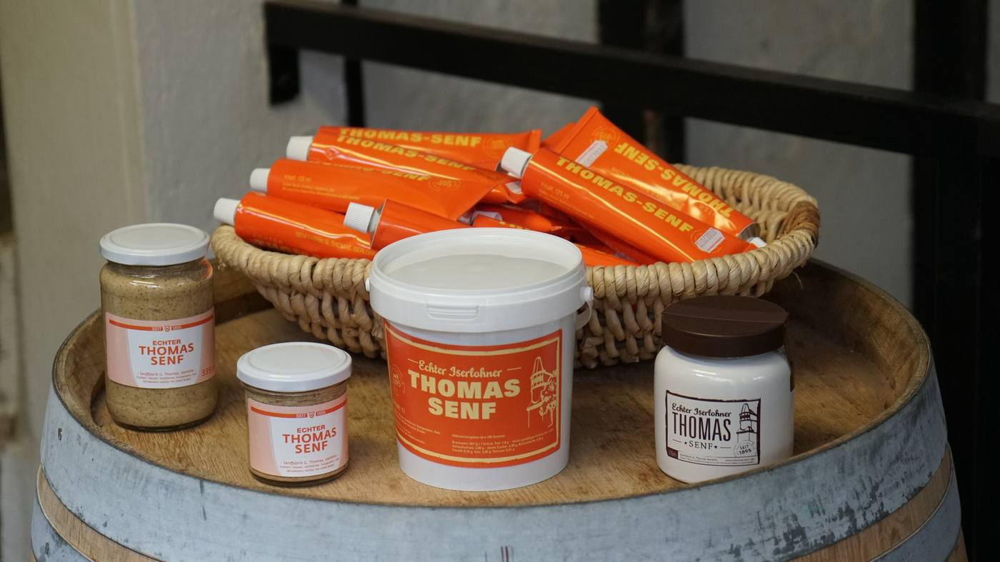
Seit 1895 · Iserlohn
Senf mit Geschichte.
Seit 1895.
Traditionelle Senfherstellung aus Iserlohn — mit Handarbeit, Familienrezept und viel Liebe zum Handwerk.
Manche Dinge müssen sich nicht verändern.
Es gibt sie noch, die kleinen Senfmanufakturen, in denen sich über Jahrzehnte hinweg nicht wirklich etwas verändert hat. Die Senffabrik G. Thomas in Iserlohn ist so ein Betrieb: keine automatischen Abfüllanlagen, keine Massenproduktion — sondern der alte Walzenstuhl von 1895, das Ur-Rezept von Urgroßvater Gustav und viel Handarbeit auf dem Saatboden in der Friedrichstraße.
Urgroßvater Gustav gründet die Senffabrik an der Friedrichstraße in Iserlohn. Der Walzenstuhl läuft mit Dampfkraft — und produziert nach einem Rezept, das bis heute nahezu unverändert ist.
Auf vereister Straße kommt der Senfwagen bei der Auslieferung ins Rutschen — der kostbare Inhalt ergießt sich auf die Straße. Nachbarn knien mit Löffeln und Eimern nieder, um so viel Senf wie möglich zu retten. Bis heute eine der liebsten Geschichten der Familie.
Großvater und Vater Günter führen den Betrieb weiter, an ihrer Seite stets ihre Frauen. Der Walzenstuhl wird elektrisch — die Handarbeit bleibt.
Gorden Thomas übernimmt den Betrieb von seinem Vater Günter. Seine Frau Marleen steht ihm zur Seite — wie schon die Frauen der Generationen davor.
Die Frankfurter Allgemeine Zeitung testet deutsche Senfsorten im großen Stil: Thomas-Senf erreicht die Note 2+ und einen Spitzenplatz im Ranking. Auch die beliebte Iserlohner Senfsuppe mit Thomas-Senf schafft es ins Fernsehen.
Die Kinder Mads und Finja wachsen mit dem Mostrich auf und brennen wie ihre Vorfahren für die traditionelle Herstellung. Gordens Wunsch zum Jubiläum: dass zum 150. Geburtstag vielleicht schon die fünfte Generation übernommen hat.
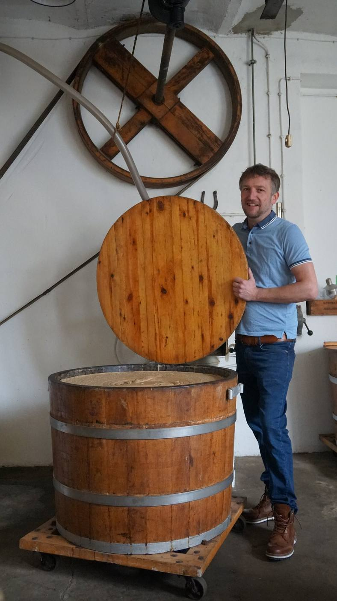
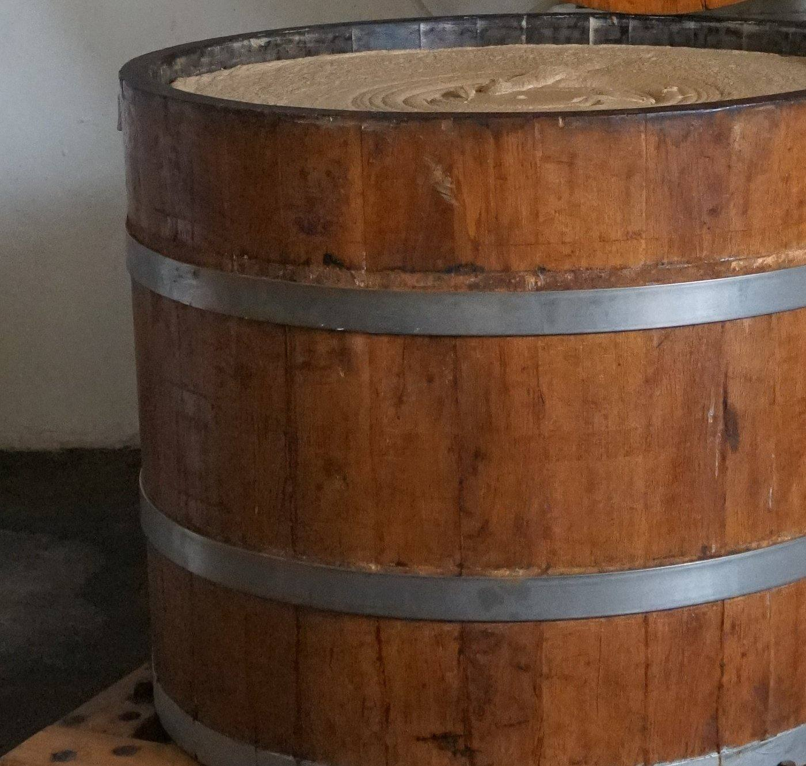
Herstellung
Handwerk, das man schmeckt.
Keine großen automatischen Abfüllanlagen, kein Fließband. In der kleinen Fabrik in der Friedrichstraße steht noch immer der Walzenstuhl von 1895 — heute elektrisch, damals mit Dampfkraft betrieben.
Auf dem Saatboden werden die Senfkörner aufgebrochen, mit Wasser, Essig und Salz eingemaischt, noch einmal fein gemahlen und in Eichenfässern gelagert. Erst dann wird der Senf von Hand frisch in Gläser und Tuben abgefüllt.
Ohne Zusatzstoffe. Ohne Kompromisse. Einfach ehrlicher Senf.
Der Prozess
Vom Senfkorn bis ins Glas.
Senfkörner
Sorgfältig ausgewählte Senfkörner — versuchsweise auch aus eigenem Anbau in Iserlohn-Kesbern.
Aufbrechen
Auf dem Saatboden mit dem historischen Walzenstuhl von 1895 aufgebrochen.
Einmaischen
Mit Wasser, Essig und Salz zu einer Maische eingemaischt.
Mahlen
Die Maische wird ein zweites Mal fein gemahlen.
Reifen
Wochenlange Reifung in Eichenfässern für den vollen Geschmack.
Abfüllen
Von Hand frisch in Gläser und Tuben abgefüllt — bereit für die Kundschaft.
Unser Senf
Echter Iserlohner Thomas-Senf.
Ein Spitzenprodukt von hoher Qualität — keinerlei Zusatzstoffe, absolut natürlich und vegan. 2016 von der Frankfurter Allgemeinen Zeitung im großen Senftest mit der Note 2+ ausgezeichnet.
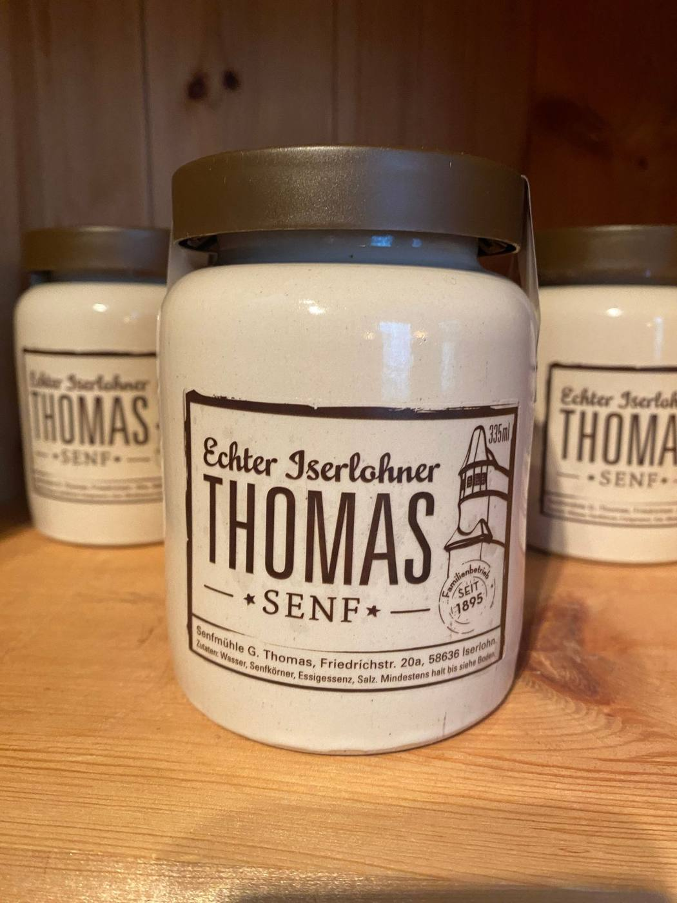
Echter Iserlohner Thomas-Senf
Das Original nach dem Ur-Rezept von Urgroßvater Gustav. Kräftig-würzig, mit dem unverwechselbaren Charakter des historischen Walzenstuhls.
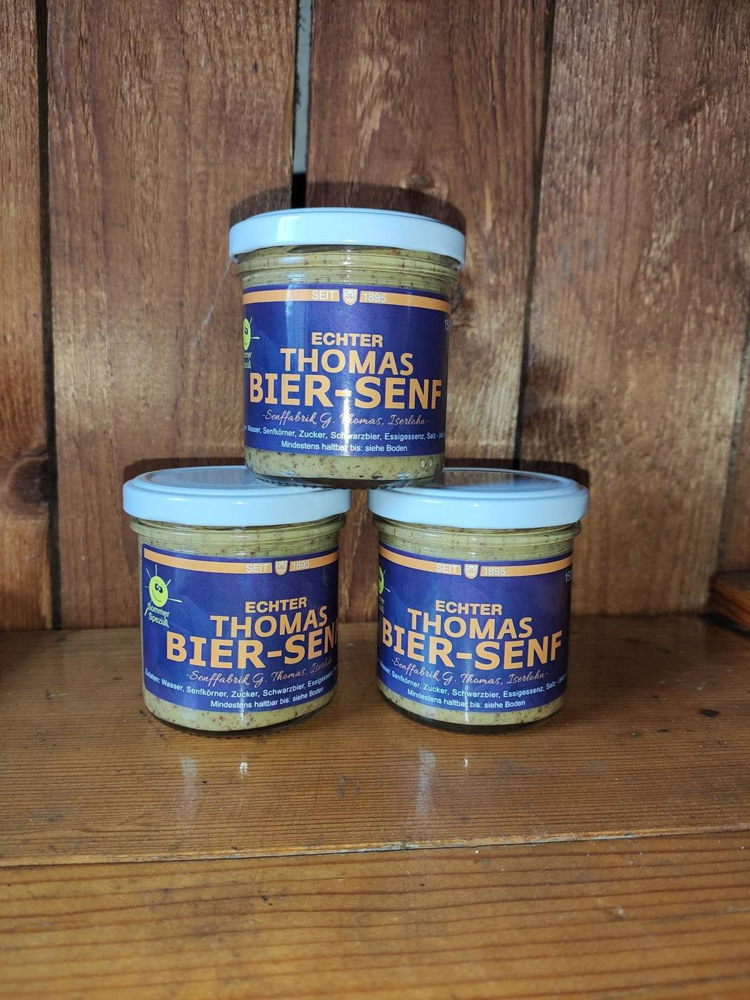
Echter Thomas Bier-Senf
Die mildere, süßliche Variante mit Schwarzbier und Zucker verfeinert — für alle, die es etwas sanfter mögen.
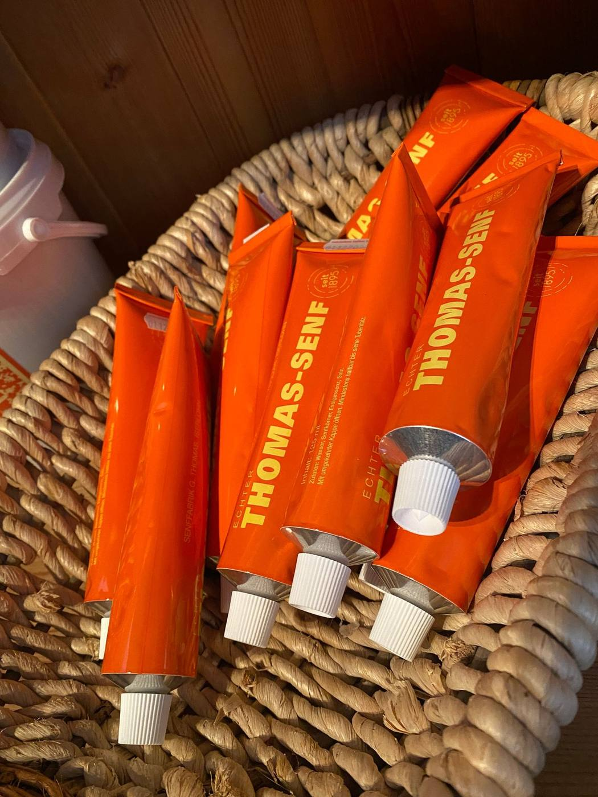
Tube
Praktisch für unterwegs
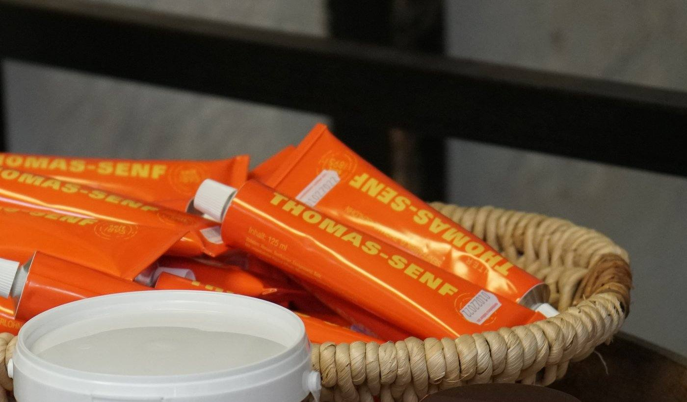
Eimer
Für Gastronomie & große Küchen
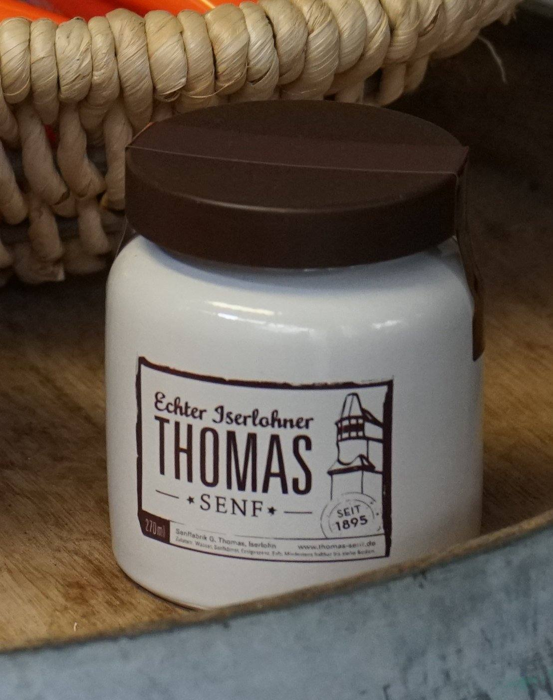
Keramiktöpfchen
Beliebtes Geschenk, nicht nur zur Weihnachtszeit
Erhältlich in Metzgereien, Hofläden, Lebensmittelgeschäften und Supermärkten der Region — oder direkt ab Werk in der Friedrichstraße in Iserlohn. Auch online über verschiedene Versandhändler erhältlich.
Senfanbau
Verwurzelt in Iserlohn.
Was nach Familientradition und Liebe zum Handwerk klingt, ist auch mit Krisen verbunden. Kaum hatte die Familie die Corona-Zeit überstanden, setzte der Krieg in der Ukraine — dem bisherigen Hauptlieferanten für Senfkörner — neue Sorgen frei.
So entstand die Idee, Senf direkt in Iserlohn anzubauen. Familie Loose verpachtete ihr Feld in Iserlohn-Kesbern an Gorden Thomas, der dort braunen Senf aussäte. Ohne spezielle Erntemaschinen kam ein großer Mähdrescher zum Einsatz; die mit Spreu verunreinigten Körner wurden anschließend in der Friedrichstraße gereinigt.
Der Anbau gelang — auch wenn die Fruchtfolge eine erneute Aussaat in Kesbern zunächst nicht zulässt. Ein Versuch, der zeigt: Thomas-Senf bleibt seiner Heimat verbunden.
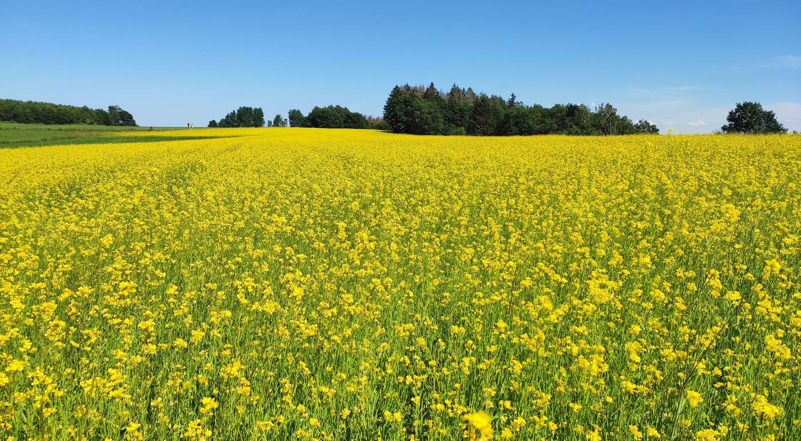
Juni · Blüte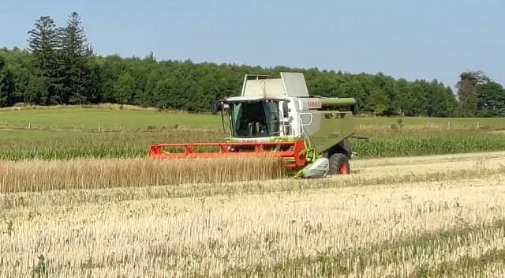
August · ErnteSenfernte in Iserlohn-Kesbern — „Gorden Thomas hofft auf einen Ertrag zwischen ein und zwei Tonnen.“
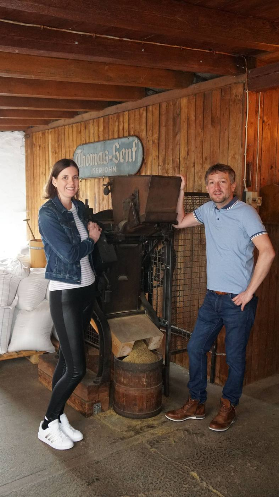
Gorden und Marleen Thomas auf dem Saatboden — am Walzenstuhl von 1895, den schon Urgroßvater Gustav benutzte und der bis heute in Betrieb ist.
Familie
Von Generation zu Generation.
Seit 1895 ist Thomas-Senf ein echter Familienbetrieb — und das im wahrsten Sinne des Wortes. Urgroßvater Gustav gründete die Fabrik, Großvater und Vater Günter führten sie weiter, immer mit ihren Frauen an ihrer Seite. Heute sind es Gorden Thomas und seine Frau Marleen.
Die Familien haben stets im Haus neben der Senffabrik gelebt — Gordens Mutter wohnt dort bis heute. Und auch die nächste Generation steht schon bereit: Die Kinder Mads und Finja brennen für den Mostrich und seine traditionelle Herstellung, genau wie ihre Vorfahren.
In Bildern
Momente aus der Manufaktur.
So besonders, dass Presse, Funk und Fernsehen schon über Thomas-Senf berichteten — unter anderem die Frankfurter Allgemeine Zeitung und der Iserlohner Kreisanzeiger.
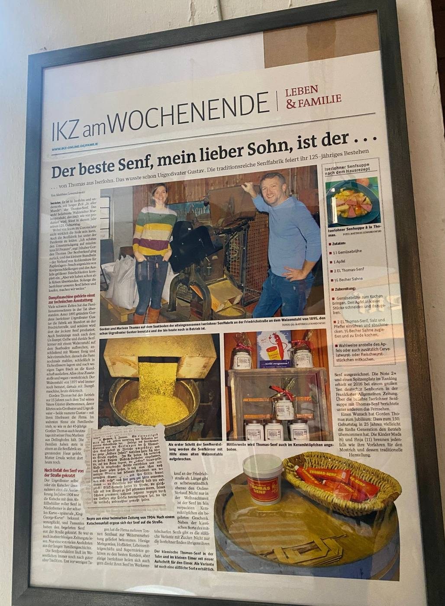
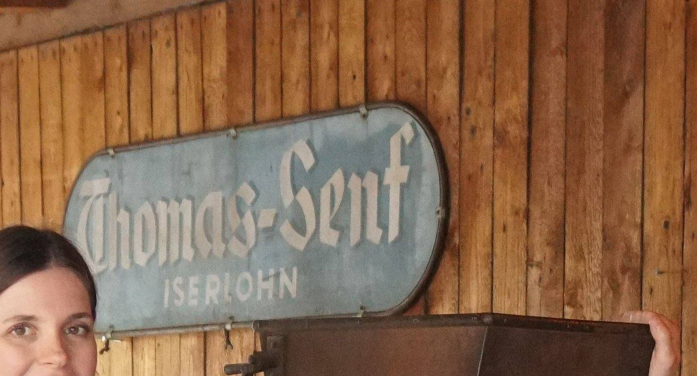
- 1 l Gemüsebrühe, 1 Apfel in Stücken darin kochen
- 2 EL Thomas-Senf, Salz & Pfeffer einrühren
- ½ Becher Sahne zugießen, aufkochen
- Wahlweise mit Cervelat- oder Fleischwurst
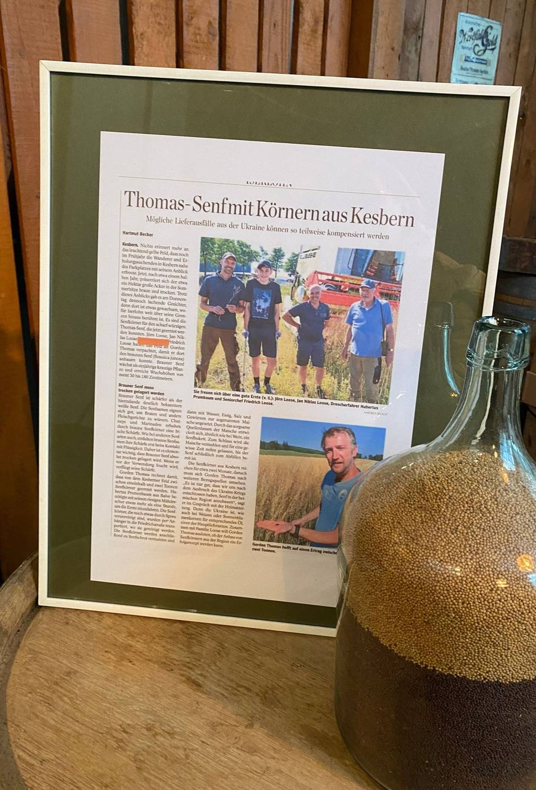
Kontakt
Kommen Sie vorbei.
| Montag | 10:00 – 15:00 Uhr |
| Dienstag | 10:00 – 15:00 Uhr |
| Mittwoch | 10:00 – 13:00 Uhr |
| Donnerstag | 10:00 – 15:00 Uhr |
| Freitag | 10:00 – 15:00 Uhr |
| Samstag | 10:00 – 13:00 Uhr |
| Sonntag | geschlossen |
Aus Datenschutzgründen wird die Google-Karte erst nach Klick geladen.